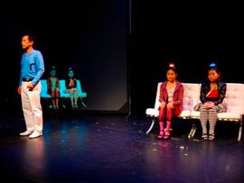
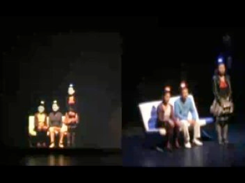

Projects

Ultimate Commodity
Link to the project page at NTU.
This is one of a few traditional theater performances that use Augmented Reality technology. Ultimate Comodity is a play by Daniel Jernigan, basing on a dystopic short story of Gopal Barathaman, a Singaporean author. The story is about a dream of a young female scientist, who wants to turn Singapore into an international organ-donor country. From her mom’s DNA, she invented a chemical element that can make human’s organ ready for implanting. She then decided to put that chemical element secretly into drinking water for all Singapore citizens. However, her mistake in DNA x makes faces of all people who drink that water look very alike. The interesting chaos happen when her father mistook her as her mother and she thought her father as her boyfriend because they all look alike to her mother...
Augmented Reality comes into play to replace the actor and actress’ real head by a model of the mother’s head.
The first demo version was showcased at The Esplanade Theater On the Bay in Singapore on September 2006. In that version, we used marker tracking and overlaid 2D videos of the mother’s face to demonstrate the concept. However, although we tried our best to mitigate the story and play actions so that the performance could be merged well with the technology, the use of markers caused a lot of troubles for the actresses.
We developed the second version in 3 months to show at the Fringe Festival 2007 in Toronto. In that version, we used stereo tracking with 2 Unibrain Fire-i cameras mounted on the ceiling, tracking a 5x5 color-LED boards on top of each actor/actresses’ heads. The rotation is tracked by MTx inertial sensors and transferred to the computer using Bluetooth.
The graphics is also improved significantly with realistic 3D models of the mother’s head. The static model of the head is constructed by Dr. Quah Chee Kwang from 5 images and a generic 3D head model. After that, 3D artists refined the model and generated different models for lip animation for different visemes. My program creates the morphing animation among those viseme models to synchronize with the prerecorded voice.
The Fringe Festival is famous for exact and limited timing for every show. We have only 2 hours to set up and calibrate the system before the first show. For every subsequent shows, we only have 15 minutes to prepare and start the system.
One of the important lessons I have learnt is the whole iterative design process -- writing >> technology >> directing >> acting >> and then come back to writing/technology or directing. We tried to integrate the technology difficulties as part of the story itself and made them invisible as much as possible in the play. We ended up describe the LED head-mounted markers as important components of the technology in the play. I was also playing a role in the play as the scientist’s colleague. (I didn’t do anything but sat on the stage to ... control the computer and hand over necessary equipments for the actor/actresses at the correct time!)
Our team includes: Prof. Russell Pensyl (director and producer), Prof. Daniel Jernigan (writer), Gerald Chew (co-director, actor), Debra Teng (actress, the mother), Sara Yang (actress, the young scientist), Anand (stage manager), Kiat (sound and lighting manager), Dr. Quah Chee Kwang (technical advisor), Lee Shang Ping (hardware developer), and me (software developer and tracking technology). Original ideas for the first version was also came from Diego Diaz and Clara Boj. This projects created many interesting memories with a lot of hard work and collaborations among all team members.

Sunday, July 15, 2007
